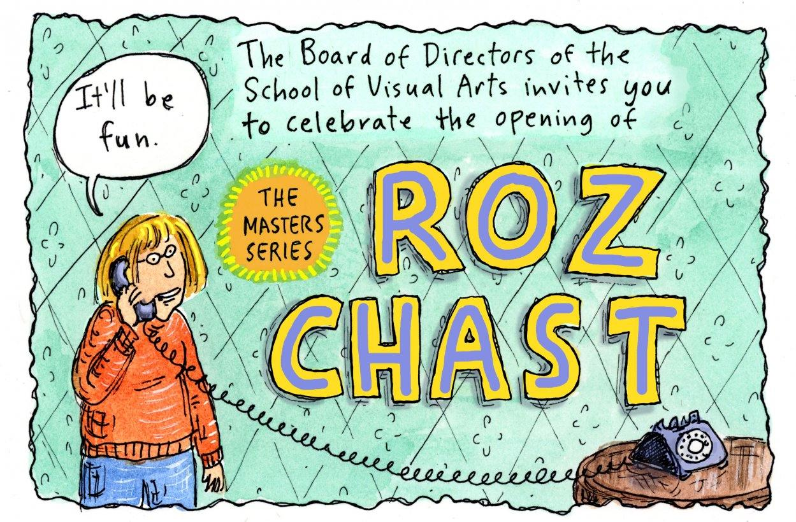
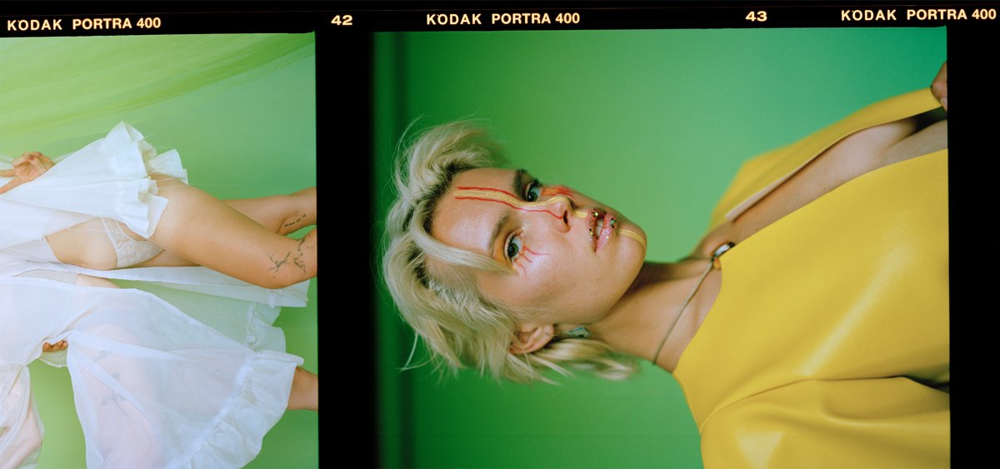

"The Masters Series: Roz Chast" | 6:00 – 8:00pm, SVA Chelsea Gallery, 601 West 26th Street, 15th floor
A comprehensive retrospective of Roz Chast's celebrated career, featuring never-before-seen cartooning and illustration work, a new hand-drawn mural, notebooks Chast kept in high school, hand-dyed Ukrainian-style Easter eggs, and more.
Photo by Amina Gingold."BeCoMiNg" | 6:00 – 8:00pm, SVA Gramercy Gallery, 209 East 23rd StreetBFA Photography and Video presents an exhibition based on picture conversations between distinguished program alumni and students in its class of 2020.